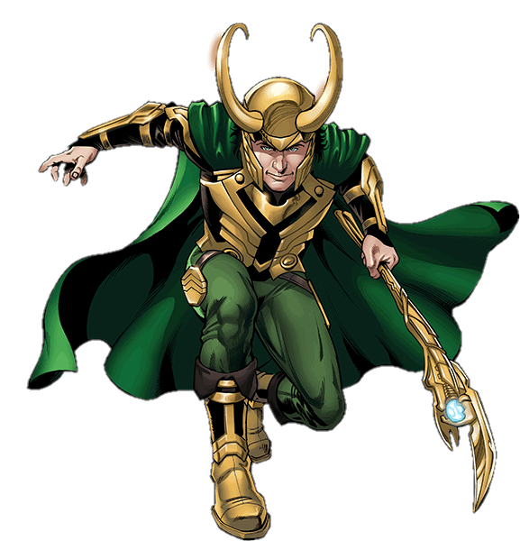

- Nom de Naissance : Loki Laufeyson
- Nom actuel : Loki Odinson
- Date de Naissance : 17 Mars 965
- Lieu de Naissance : Jotun
- Etat : Décédé le 30 Mai 2018
Loki est né géant des glaces, mais à sa naissance, il a été kidnappé et adopté par Odin et Frigga. Il a un frère, Thor et une soeur, Hela.
